Os músculos que atuam no pé podem ser divididos em dois grupos distintos: músculos extrínsecos e intrínsecos.
Os músculos extrínsecos surgem dos compartimentos anterior, posterior e lateral da perna.
Eles são os principais responsáveis por ações como eversão, inversão, flexão plantar e dorsiflexão do pé.
Os músculos intrínsecos estão localizados dentro do pé e são responsáveis pelas ações motoras finas do pé, por exemplo, movimento individual dos dedos.
Partindo da face plantar, os músculos da planta estão organizados em quatro camadas plantares e duas camadas dorsais:
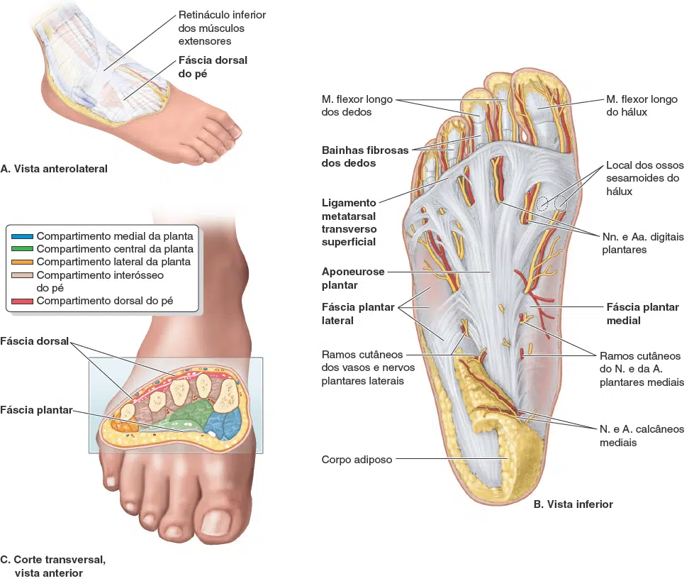
Inserção Proximal: Calcâneo.
Inserção Distal: Falange proximal do hálux.
Inervação: Nervo Plantar Medial (L5 – S1).
Ação: Flexão e abdução do hálux.
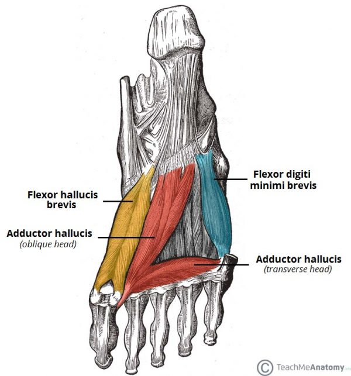
Inserção Proximal: Calcâneo e aponeurose plantar.
Inserção Distal: Falange intermédia do 2º ao 5º dedos.
Inervação: Nervo Plantar Medial (L5 – S1).
Ação: Flexão da IFP e IFD do 2º ao 5º dedos.
Inserção Proximal: Calcâneo.
Inserção Distal: Falange proximal do 5º dedo.
Inervação: Nervo Plantar Lateral (S2 – S3).
Ação: Abdução do 5º dedo.
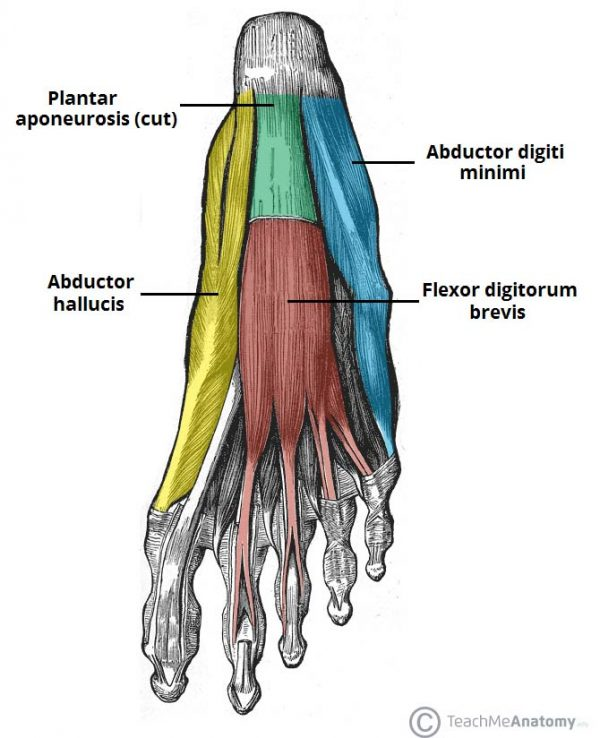
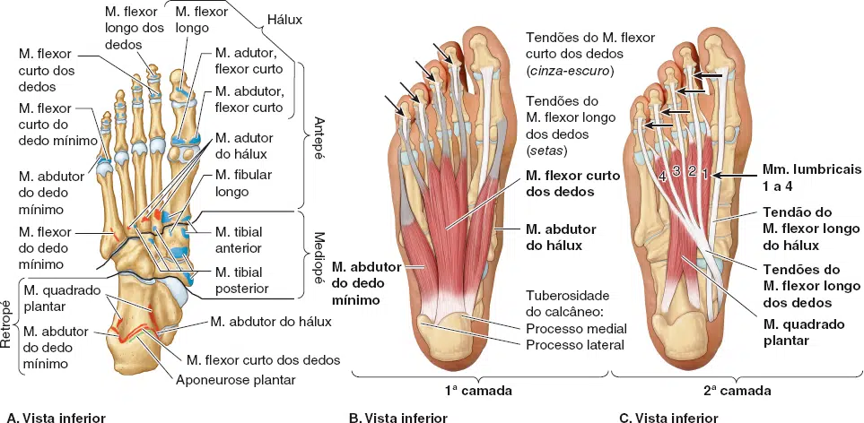
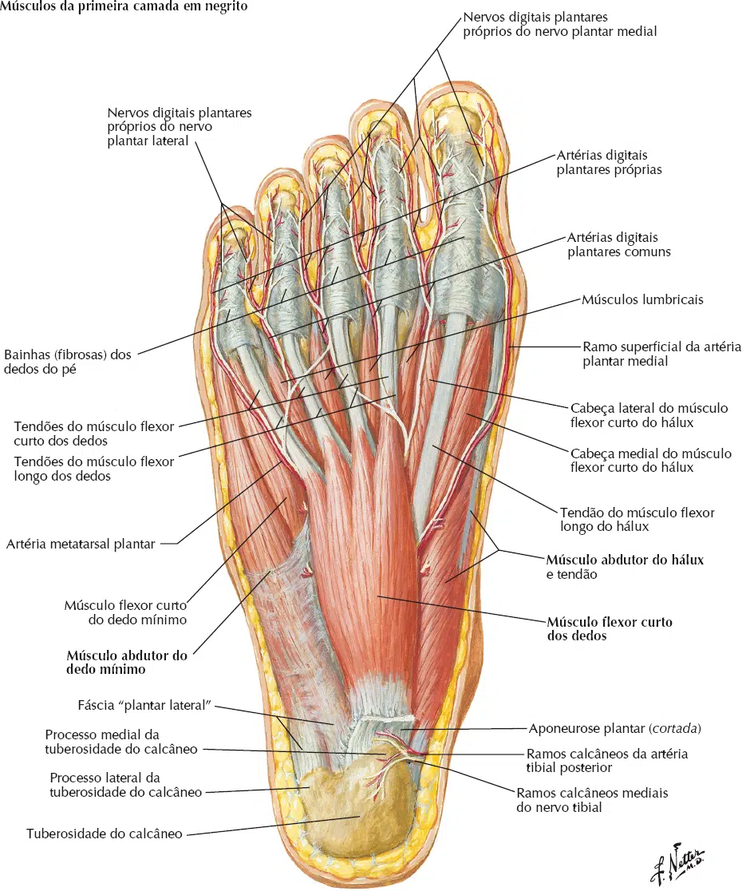
Inserção Proximal: Calcâneo.
Inserção Distal: Tendões do flexor longo dos dedos.
Inervação: Nervo Plantar Lateral (S2 – S3).
Ação: Flexão da MF, IFP e IFD do 2º ao 5º dedos.
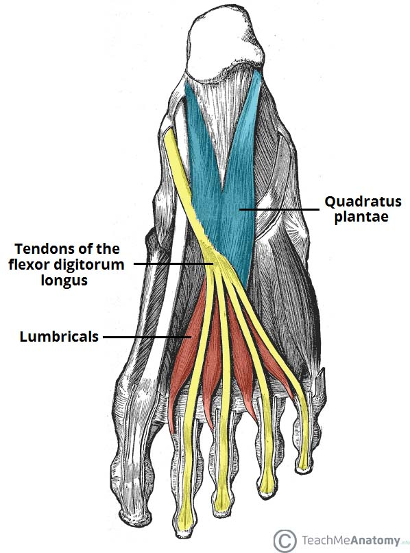
Inserção Proximal: Tendão do flexor longo dos dedos.
Inserção Distal: Tendão do extensor longo dos dedos e falange proximal do 2º ao 5º dedo.
Inervação: Nervo Plantar Medial (2º e 3º dedos) e Plantar Lateral (4º e 5º dedos) (L5 – S3).
Ação: Flexão da MF e propriocepção.
Inserção Proximal: Cubóide e cuneiforme lateral.
Inserção Distal: Falange proximal do hálux.
Inervação: Nervo Plantar Medial e Lateral (L5 – S1).
Ação: Flexão da MF do hálux.
Inserção Proximal: 2º, 3º e 4º metatarsais.
Inserção Distal: Falange proximal do hálux.
Inervação: Nervo Plantar Lateral (S2 – S3).
Ação: Adução do hálux.
Inserção Proximal: Base do 5º metatarso.
Inserção Distal: Base da falange proximal do 5º dedo.
Inervação: Nervo Plantar Lateral (S2 – S3).
Ação: Flexão da falange proximal do 5º dedo.
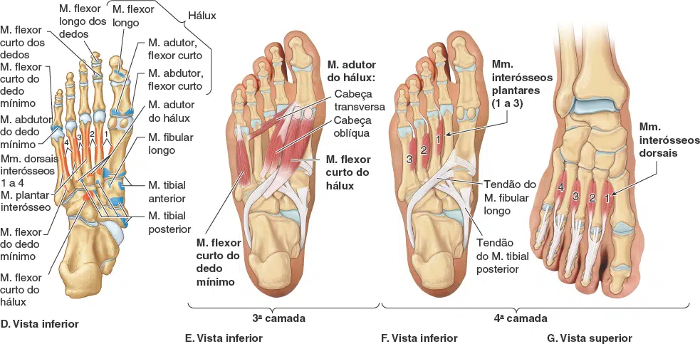
Inserção Proximal: Borda medial do 3º ao 5º metarsos.
Inserção Distal: Borda medial das falanges proximais do 3º ao 5º dedos.
Inervação: Nervo Plantar Lateral (S2 – S3).
Ação: Aproximação (Adução) dos dedos e flexão das MF.
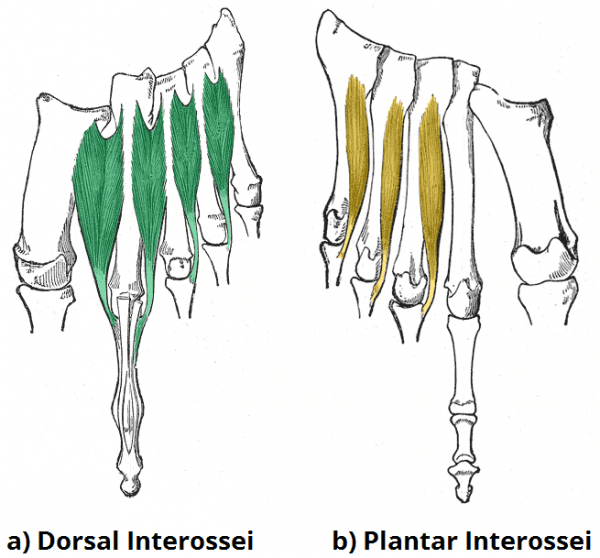
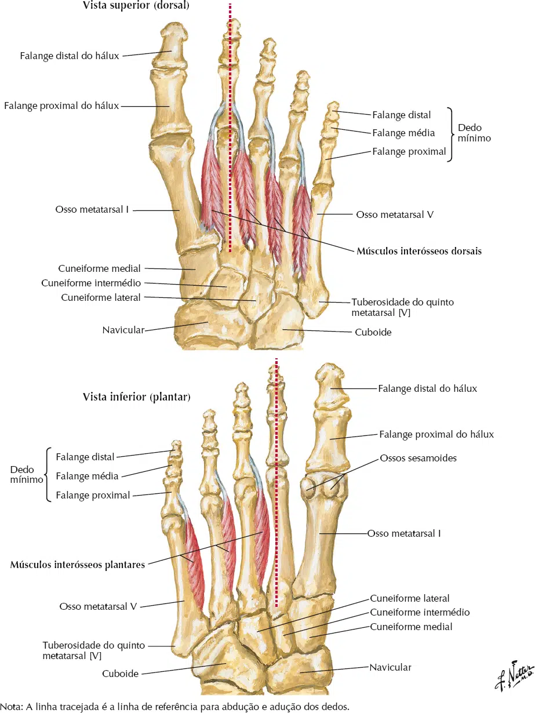
Inserção Proximal: Entre os ssos metatársicos.
Inserção Distal: Bases das falanges proximais do 2º ao 4º dedos e tendões dos
extensores longos dos dedos.
Inervação: Nervo Plantar Lateral (S2 – S3).
Ação: Afastamento (Abdução) dos dedos e flexão das MF.
Inserção Proximal: Calcâneo.
Inserção Distal: Tendão do 2º, 3º e 4º extensor longo dos dedos.
Inervação: Nervo Fibular Profundo (L5 – S1).
Ação: Extensão do 2º ao 4º dedos.
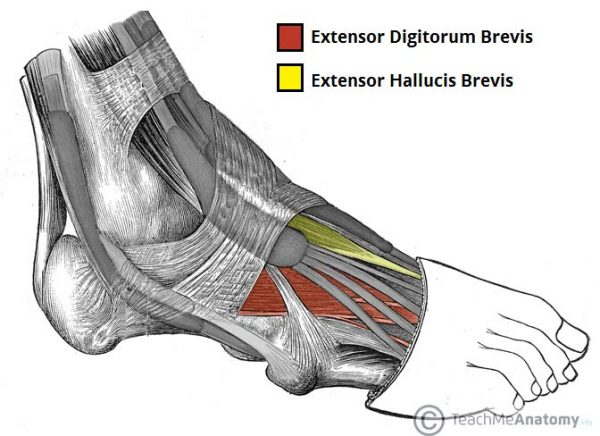
Inserção Proximal: Calcâneo.
Inserção Distal: Falange proximal do hálux.
Inervação: Nervo Fibular Profundo (L5 – S1).
Ação: Extensão do hálux.
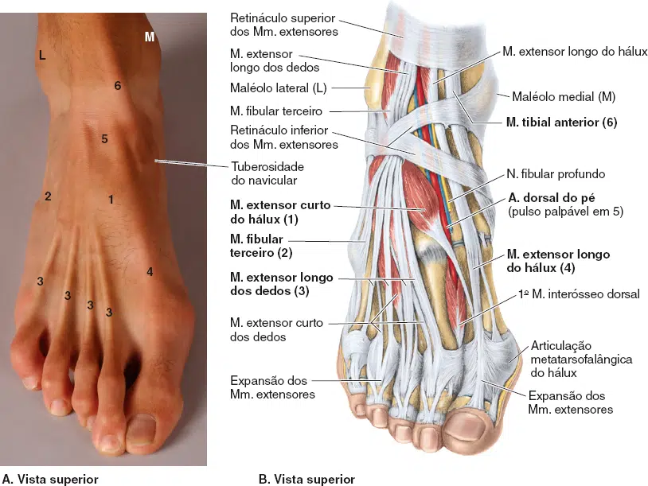
Essas camadas estão dentro de quatro compartimentos:
O compartimento medial contém os músculos: abdutor do hálux e flexor curto do hálux e o tendão do músculo flexor longo do hálux.
O compartimento central contém: o músculo flexor curto dos dedos, os tendões dos músculos flexor longo do hálux e flexor longo dos dedos, além dos músculos associados a este último, quadrado plantar e lumbricais, e o músculo adutor do hálux.
O compartimento lateral contém os músculos abdutor e flexor curto do dedo mínimo.
O compartimento interósseo contém os músculos interósseos dorsais e plantares.
Um quinto compartimento, o compartimento dorsal do pé, situa-se entre a fáscia dorsal do pé e os ossos tarsais e a
fáscia interóssea dorsal do mediopé e antepé.
Contém os músculos: extensor curto do hálux e extensor curto dos dedos.